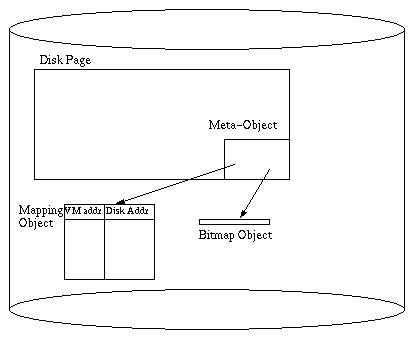

Object-Oriented DBMS
Background
The relational model:
- DB = {relations}
- Relation = {tuples}
- Tuple = {named fields/columns (homogeneous)}
Relational Languages
- SQL @ declarative queries (or QBE, Quel, etc.)
- C/SQL or 4GLs for applications
Other relational goodies
- Logical vs. physical schemas (data independence)
- Views, triggers, authorization, constraints
- Simple algebra & query optimization
- Robust systems w/good performance
- Easily parallelizable
Q: Isn't this heaven?
A1: "A relational database is like a garage that forces you to take your car apart
and store the pieces in little drawers"
A2: E/R world, set-valued attributes, variances among entities, & SQL limitations
(expressive power)
OODBMS Goals
- Shrink the "impedance mismatch" problem for application programmers
- DB vs. PL type systems
- Declarative vs. procedural programming
- Set-at-a-time vs. instance-at-a-time compilation
- Relax data model limitations
- Atomic values, tuples, sets, arrays, identity
- Classes w/methods & encapsulation
- Subtyping/inheritance
- Composite objects (w/sharing)
- Versions/configurations (& long xacts)
- New language features
- Computationally complex methods (e.g. C++)
- Complex object "queries"
- Integrated DBPL(s) (sometimes)
- General focus tends to be on CAx, GIS, telecomm, cooperative/collaborative work, etc.
- Predates "Object-Relational" systems (but coeval with Postgres)
The OODBMS Manifesto (Atkinson/Bancilhon/DeWitt/Dittrich/Maier/Zdonik, '90)
Thou shalt support:
- Complex objects (tuples, sets, bags, arrays + constructors & ops)
- Object identity (equal ! ==> identical; sharing &
updates)
- Encapsulation (ADTs/info hiding/implementation vs. interface)
- Class/type hierarchies (inheritance, substitution for specialization)
- Late binding (==> polymorphism, "virtual" classes in
C++ terms)
- Computational completeness (methods)
- Extensibility (system & user types are the same)
- Persistence (orthogonal to type)
- Secondary storage (large DBs)
- Concurrency control
- Recovery
- Ad hoc query facility (declarative, optimized)
Thou may support:
- Multiple inheritance
- Type checking (static vs. dynamic up to you)
- Distribution (client/server)
- Long xacts
- Version management
Wide open:
- Programming paradigm
- Type systems details (base + constructors)
- Type system fanciness (e.g. templates, etc.)
ObjectStore
One of the more successful vendors, both commercially and design-wise. Took C++ type
system & language constructs, added databasey features such as:
- Persistence for objects (at allocation)
- Bulk types (via templates)
- Relationships (i.e. OO referential integrity)
- Query expressions (simple, but optimizable)
- Fancy runtime system with DB goodies like CC&R, client/server, indexes, …
Some simple DDL examples to see data model, C++ extensions, "query language",
index support.
Still in business (www.odi.com), supporting C++, Java,
ActiveX.
Pointer Swizzling: ObjectStore & QuickStore
A main system design contribution in OODBMS, and ObjectStore does it in a clever
way. QuickStore is a responsible academic study of the technique, comparing it to
the obvious alternative.
- Problem: C++ contains pointers. Persistent C++ stores pointers on disk, somehow. At
fetch time, must fetch the disk objects into memory and turn stored refs into valid memory
pointers. This is called "swizzling" a disk pointer to a (virtual) memory
pointer.
- Can be done with hash indices over the buffer pool, and special compilation
(persistent-object refs turn into function calls that do hash lookups to map disk ptr to
memory pointer; each time you follow a persistent ptr in C++ you call a function and
traverse a hash index).
- ObjectStore & QuickStore take advantage of VM protection to do this better
- Persistent pointers are stored as normal C++ memory refs -- even on disk!
Mapping
(static) (dynamic)
disk page -----------> VM address -----------> physical mem address (buffer
pool)
- Buffer pool is a file, virtual memory is mapped to it via mmap()
- mapping from VM to physical mem done by OS
- mapping from disk page to VM start done with a QuickStore main-mem table:
(virtual address range, physical disk location, pointer in memory, flags)
- flags include access type (R/W), whether page is X-locked, whether page has been read in
already
- binary tree index over virtual address ranges
- hashtable index over physical disk location
Disk page contains mapping object, and each persistent object has a bitmap
object

- meta-object is a header on the page that points to the mapping object and
the bitmap object
- mapping object is a table of (virtual addr, disk addr) pairs for all pointers
from this page to elsewhere
- bitmap object is a table of locations of pointers within the objects on the page (obtained via
type analysis)
Pointer Swizzling
- VM page is access-protected before first read
- Upon reading a page, mapping object is fetched
- for each entry in mapping object
- check main-mem table to see if the entry's page is already mapped
- if not, map now
- try to allocate the old VM frame if possible
- if not possible, allocate a new VM frame and swizzle pointers to old frame
(found via bitmap object)
- access protect the frame that's allocated
- if any of the pointers in the mapping object were changed (placed elsewhere in VM), go
to bitmap object and swizzle all pointers on the page. note that swizzling
may be necessary even if this read did not result in the relocation in VM
- Subsequent traversals of that pointer work as fast as normal C++ refs; database is out
of the way!
- Mapping of VM frame to page must remain valid for duration of xact.
- When a buffer pool page is evicted, the VM frame is protected again to initiate a fetch
on the next ref.
Example: linked list.
Paper gives a brief overview of OO7 benchmark (the main OODBMS benchmark)
Pros:
- Pointer traversal is as fast as it ever was
- Allows "legacy" C++ code to manipulate persistent data
Cons:
- Places some limits on amount of data one xact can access at a time, or from one page.
- Initial faulting cost higher; shows up in access-once workloads.
Transactional fallout:
- Concurrency control via page-level locking
- Logging of page diffs
- Client writes go to log by commit time, then (lazily) to DB
Client-Server Caching
ObjectStore takes one (reasonable) solution: Call-Back Locking. Franklin and Carey look
at that and many others.
Goal: Allow clients to cache objects/pages and maybe locks from server
for longer than a xact, without sacrificing transactional semantics. I.e. efficiently
solve the transactional cache consistency problem.
Note: There are many solutions, and they don't break down into simple choices
(e.g. optimistic vs. pessimistic.)
Related Work: Shared-memory multiprocessor architecture and parallel programming
models deal with cache consistency, but not transactional cache consistency. Also, they're
not really client-server, and OODBMSs are. Note that caching is not very different from
replication, and some of the possible approaches were pioneered in distributed DBMSs, and
to a lesser extent in shared-disk parallel DBMSs.
Algorithms considered:
- Server-Based 2PL (S2PL)
- Basic 2PL (C2PL): 2PL at server
- Caching 2PL (B2PL): 2PL at server + data caching at client.
- when client requests a lock, server ships a new copy of page if necessary
- Optimistic 2PL (O2PL)
Each client sets locks locally without contacting server. Server keeps track
of who has copies of what. At commit time, client sends all updates to server.
- xact gets x-locks at server
- then attempts to get x-locks at all clients with copies.
- Copies are handled either by
- invalidation (copy deleted from other clients)
- propagation (copy is updated at other clients)
- dynamic (choose between invalidate and propagate based on some criteria)
Variants:
- O2PL-Invalidate (O2PL-I)
- O2PL-Propagate (O2PL-P)
- O2PL-Dynamic (O2PL-D)
propagate first update. after that, propagate if
- page is resident at client
- page was re-accessed at client since last propagation (i.e. last propagation wasn't wasted)
This scheme is a bit over-eager in propagating updates: always loses to one of O2PL-I
or O2PL-D in earlier studies.
- O2PL-New-Dynamic (O2PL-ND)
Add one more condition for propagation:
- page previously invalidated at client mistakenly
Mistaken invalidation is managed by keeping a LIFO list of invalidate page #'s
at each client. On a page access, if that page is in the list it is marked as mistakenly
invalidated when it's read in.
Less eager about propagation.
- Callback Locking (CBL)
Clients can cache locks across xacts. Data must be locked immediately at
server. If server knows some client has a conflicting lock, sends a
"callback" to that client and waits for it to drop the lock.
- Callback-Read (CB-R):
- clients only cache read locks
- write requests generate callbacks
- at end of writing xact, client sends copy of data to server
- writer maintains read lock cached after EOT
- Callback-All (CB-A):
- clients can cache read and write locks
- server keeps track of one exclusive copy at a client
- when a conflicting write appears, sends a downgrade request to the exclusive
client
Detail regarding deadlock detection:
- client responds immediately to callback even if it can't drop/downgrade
immediately. This gives deadlock detector full info.
Workloads
- HOTCOLD
- High locality per client, some R/W and W/W sharing
- FEED
- One site produces all data, others consume (read) it.
- UNIFORM
- Low locality, moderate write prob. (caching shouldn't help)
- HICON
- skewed access a la shared-disk
Performance Study
"Typical Wisconsin blizzard of data". The upshot:
- O2PL-ND dominates O2PL-I, matching its performance when it's best. Does as well as
O2PL-D in the case when propagation is more appropriate. The slower the network (relative
to CPU) the better O2PL-ND looks (due to cost of unnecessary propagation).
- CB-Read dominates CB-All in many situations because caching of write-locks increased the
number of messages except in minimal-contention situations.
- CB algorithms beaten by O2PL-ND if network is bottleneck, but are comparable if disk is
the bottleneck.
- CB algorithms have lower abort rate than O2PL-ND, and do better in high-contention
scenarios. Since OODBs have long transactions, CB-R is a likely choice as the
winner.
|